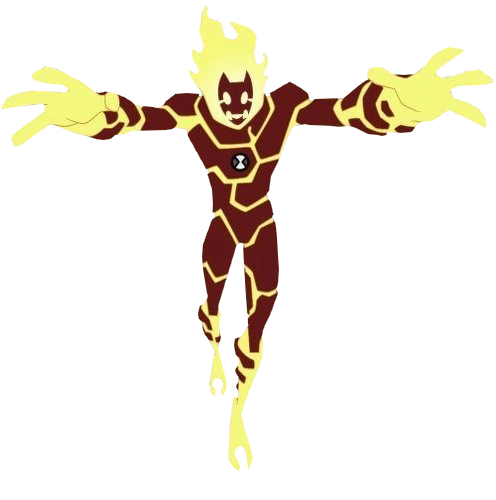

Chama foi o primeiro alien que o Ben se transformou, causando um incêndio enorme na floresta, seu corpo é de um humanóide de magma e fogo.
Com um enorme poder de fogo, consegue disparar rajadas de fogo e voar com a impulsão, como um foguete. Se tem algum problema, chama o chama!
Espécie: Pyronita
Planeta de Origem: Pyrus
Curiosidade:
Quando Ben está resfriado, seus poderes invertem e ele passa a disparar gelo.
